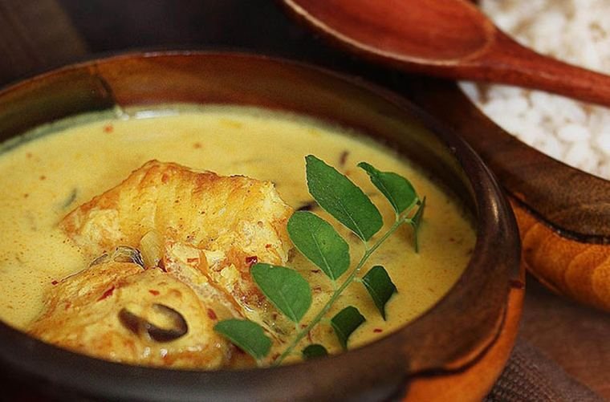

Fish Moilee
Fish in coconut milk

Method
- Add a few mustard seeds, cumin seeds, chopped onions, green chilli, freshly crushed ginger and garlic and curry leaves to the oil.
- Mix and sauté the onions till soft and translucent. Do not brown them — stir constantly until the onions are transparent.
- Add turmeric powder, black pepper powder and enough thin coconut milk to cover the ingredients in the pan.
- Do not add the thick coconut milk yet, as it could curdle. Add the fish and a pinch of salt.
- Bring to a boil and immediately turn the heat down. Simmer gently for 6–7 minutes until cooked.
- Add the quartered tomato. Do not add tomatoes at the beginning, as they will cause the curry to curdle.
- Finally, add the thick coconut milk and let it boil for just 2 minutes on a slow flame.
- Garnish with sliced tomatoes and serve with steamed basmati rice.